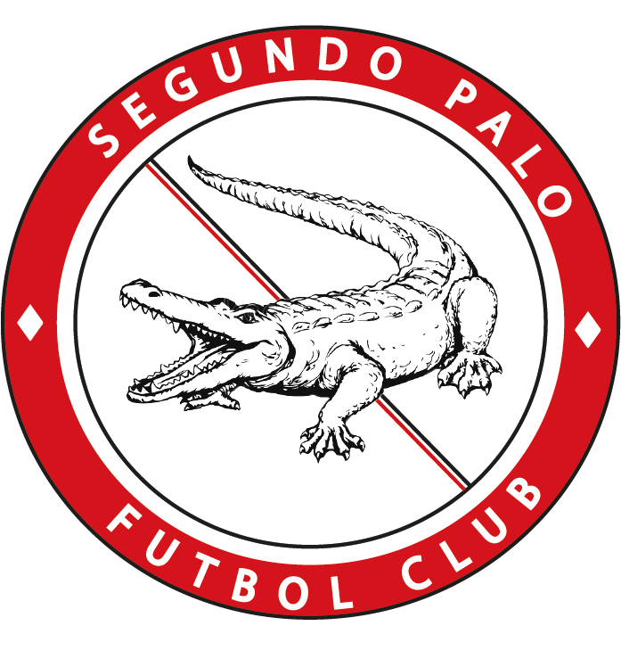

Segundo Palo FC
Quienes somos?
Segundo palo es un equipo de amigos, por sobre todas las cosas.
La finalidad de este grupo es practicar el deporte que mas nos apasiona con el objetivo de conseguir titulos sin dejar de lado nuestra ideologia y filosiofia de juego.
Inicios
La idea de formar este equipo surgio en el año 2019, motivados por competir nuestro primer torneo, "Belgrano 2019",
competicion la cual seria nuestro primer titulo.